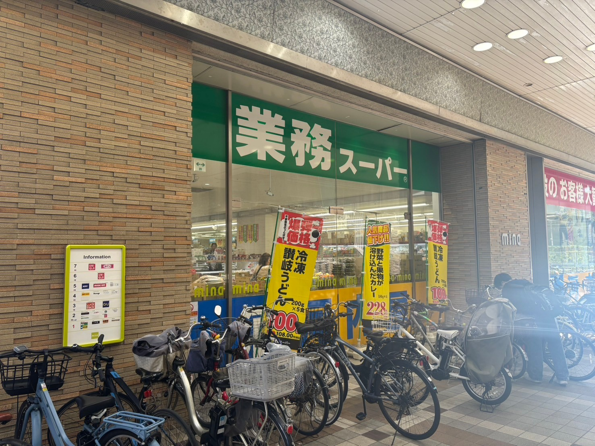
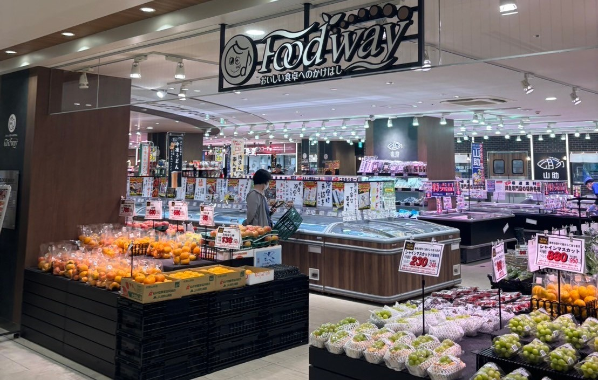
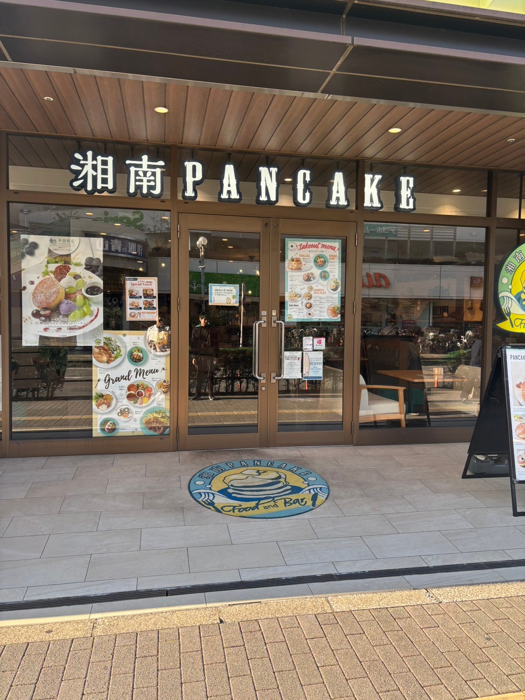
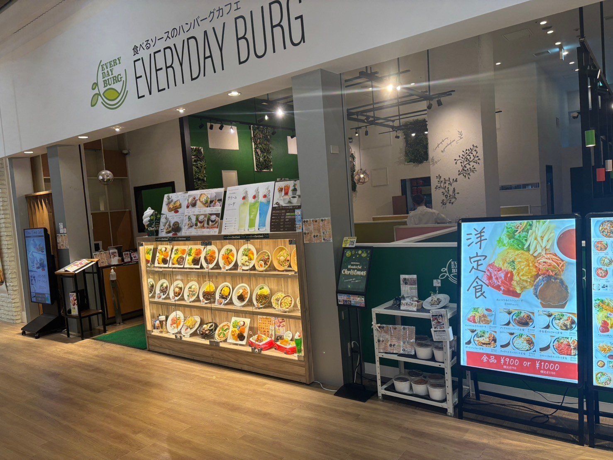

スーパー
業務スーパー ミーナ津田沼店

業務スーパー ミーナ津田沼店は、千葉県習志野市津田沼エリアに位置し、地元の方々にとって非常に便利でお得なスーパーマーケットです。 食材をはじめとするさまざまな商品がリーズナブルな価格で提供されており、特に業務用サイズの商品が多く揃っているため、まとめ買いをする主婦の方や、食費を抑えたい学生にも人気があります。 店内には冷凍食品、乾物、調味料、お菓子、飲み物、日用品まで幅広い商品が揃い、家庭で必要なものがほぼ揃うのが魅力です。 業務スーパーの特徴である大容量の冷凍食品や調味料は、コストパフォーマンスが非常に高く、冷凍野菜や肉類、冷凍フルーツ、またパンやパスタなどの日持ちする食品も充実しています。 また、輸入食品も豊富で、ヨーロッパやアジアなど各国の調味料やお菓子が手に入るため、異国料理の材料も揃えやすく、料理好きな方にもおすすめです。 スタッフも親切で店内は整理整頓されており、買い物がしやすい環境が整っています。 業務スーパー ミーナ津田沼店は、家族連れや学生、一人暮らしの方まで、幅広いお客様にとって頼りになる存在で、毎日の買い物を手軽に、経済的にサポートしてくれるお店です。
住所: 千葉県習志野市津田沼1丁目3-1 ミーナ津田沼1階
営業時間: 10:00 - 22:00
電話番号: 047-476-6151
フードウェイ ロハル津田沼店

フードウェイ ロハル津田沼店は、千葉県習志野市津田沼エリアにあるロハル津田沼内に位置する、地元で人気のスーパーマーケットです。 新鮮で質の高い食品やこだわりの食材が豊富に揃い、毎日の食卓を支える場所として親しまれています。 特に生鮮食品の品質が高く、野菜や果物、精肉、鮮魚などが新鮮で品揃えも充実しているため、多くの家庭が安心して利用しています。 店内には輸入食品やこだわりの調味料、健康志向の食品も豊富に揃っており、普段の食事にちょっとした変化を加えたい方や、こだわりの食材を探している方にもおすすめです。 また、惣菜コーナーも充実しており、手作りのような味わい深いお惣菜が並び、忙しい日には便利に利用することができます。 旬の食材を使ったメニューもあり、季節感を楽しみながら食事を楽しむことができます。 フードウェイ ロハル津田沼店は、清潔感があり、通路が広く設計されているため、ゆったりとした気持ちで買い物を楽しめるのも魅力です。 スタッフも親切で、丁寧に対応してくれるので、気軽に買い物相談をしやすいアットホームな雰囲気があります。 地元で質の良い食品を探したい方や、毎日の料理にこだわりたい方にとって頼りになる存在として、フードウェイ ロハル津田沼店は、多くの人に愛されるスーパーマーケットです。
住所: 千葉県習志野市津田沼7丁目7-1 LOHARU津田沼1階
営業時間: 10:00 - 21:00
電話番号: 047-455-5500
カフェ
湘南パンケーキ Loharu津田沼店

湘南パンケーキ Loharu津田沼店は、千葉県習志野市のロハル津田沼内に位置する、ふわふわでボリューム満点のパンケーキが自慢のカフェレストランです。 湘南生まれのブランドならではのリラックスした雰囲気と、素材にこだわったメニューが特徴で、地元の方や観光客に人気のスポットとなっています。 こちらのパンケーキは、しっとりとした生地にふわふわの食感が加わり、口に入れるとほどけるような美味しさが広がります。 定番のホイップクリームやシロップがたっぷりのパンケーキはもちろん、季節ごとのフルーツや限定トッピングを楽しめるメニューも豊富です。 お食事系パンケーキやサラダ、パスタなど、ランチやディナーにもぴったりのメニューも取り揃えられているため、幅広いシーンで利用されています。 湘南らしい海辺を思わせるインテリアと、ゆったりとした店内の空間は、友人や家族との会話を楽しむにもぴったりです。 また、お子さま連れにも優しい配慮がなされており、子どもと一緒に過ごしやすい雰囲気が魅力です。 湘南パンケーキ Loharu津田沼店は、甘いスイーツを楽しみたいときや、のんびりした時間を過ごしたいときにぴったりの場所として、多くの人々に愛されています。
住所: 千葉県習志野市谷津7丁目7-1 Loharu津田沼1階
営業時間: 平日 10:00 - 22:00 土日 9:00 - 22:00
電話番号: 047-406-3222
EVERYDAY BURG ～食べるソースのハンバーグカフェ～

EVERYDAY BURG ～食べるソースのハンバーグカフェ～は、子育て中の親にもぴったりな、リラックスできるカフェです。 ここでは、ジューシーなハンバーグとオリジナルの食べるソースを楽しむことができ、お子様連れでも安心して食事ができます。 店内は明るく、広々としたスペースで、子どもが遊ぶことができるコーナーもあり、食事中でも目を離さずに安心して過ごせます。 豊富なメニューには、お子様用のハンバーグプレートや、家族でシェアできるセットメニューもあり、お昼のランチタイムには特におすすめです。 おいしい食べ物を楽しみながら、ゆったりとした時間を過ごせるので、親子での外食に最適な場所です。
住所: 千葉県習志野市津田沼1丁目23-1 3F
営業時間: 11:00 - 22:00
電話番号: 047-406-5517